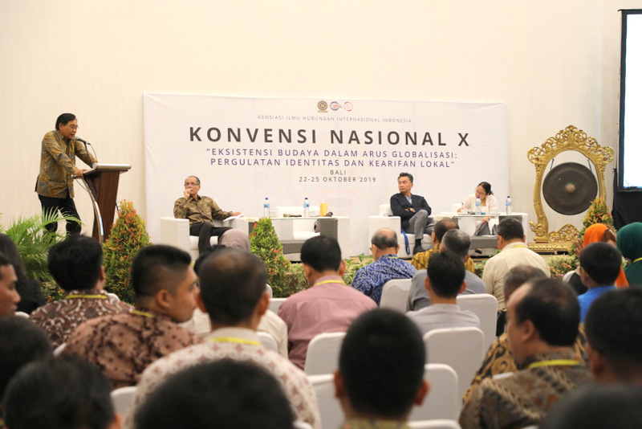
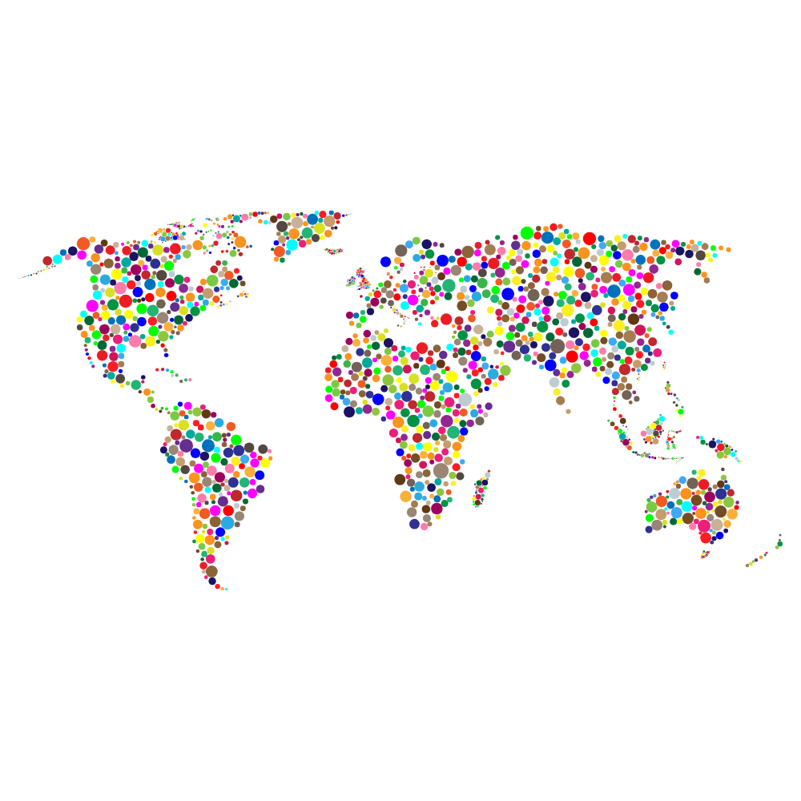

Konvensi Nasional Asosiasi Ilmu Hubungan Internasional Indonesia—Vennas AIHII—adalah pertemuan tahunan nasional para akademisi dan praktisi jurusan Hubungan Internasional. Diselenggarakan oleh AIHII, konvensi ini bertujuan untuk membahas perkembangan kurikulum, isu-isu global terkini, dan memperkuat jejaring antar program studi Hubungan Internasional. Lebih dari 60 universitas telah berpartisipasi dalam acara ini setiap tahunnya.
Tahun ini, AIHII akan menyelenggarakan Vennas ke-17 yang bertemakan Pembelajaran bersama: Indonesia, Tiongkok, dan dunia. President University akan menjadi tuan rumah Vennas tahun ini dengan fokus akademik Indonesia–Tiongkok.

Kami mengundang para akademisi Hubungan Internasional untuk berbagi penelitian dan gagasan. Makalah yang Anda kirim berpeluang untuk dipublikasikan di berbagai jurnal akademik mitra Vennas.
Tahun ini, Call for Papers Vennas bermitra dengan World Sinology Center, Beijing Language and Culture University. Makalah yang Anda kirim akan bertemakan Melampaui fragmentasi: Konstelasi kuasa, inovasi, dan tata kelola global masa depan. Berikut subtema akademik yang dapat dibahas: